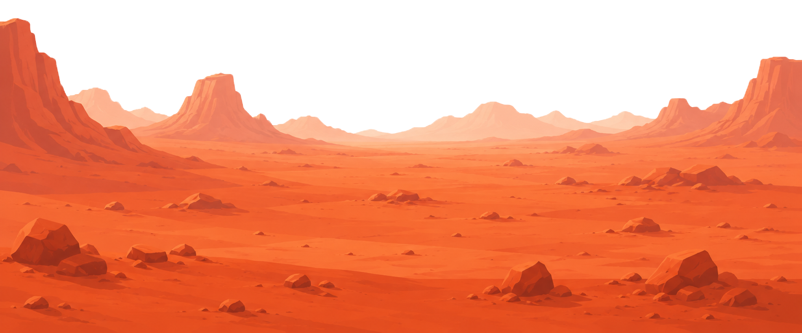
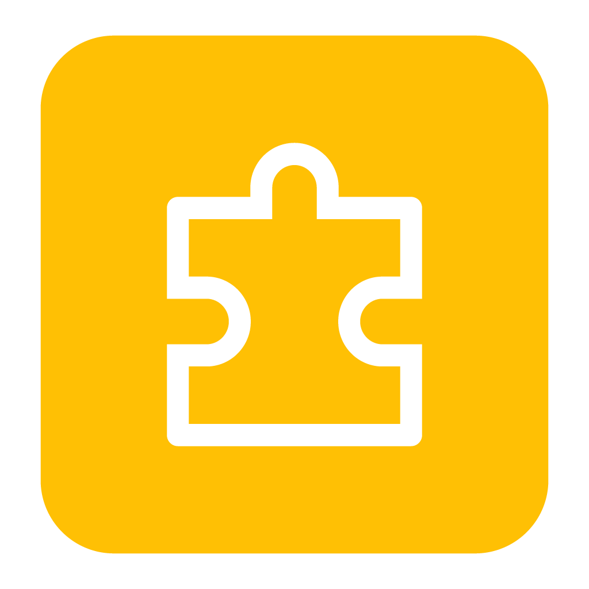
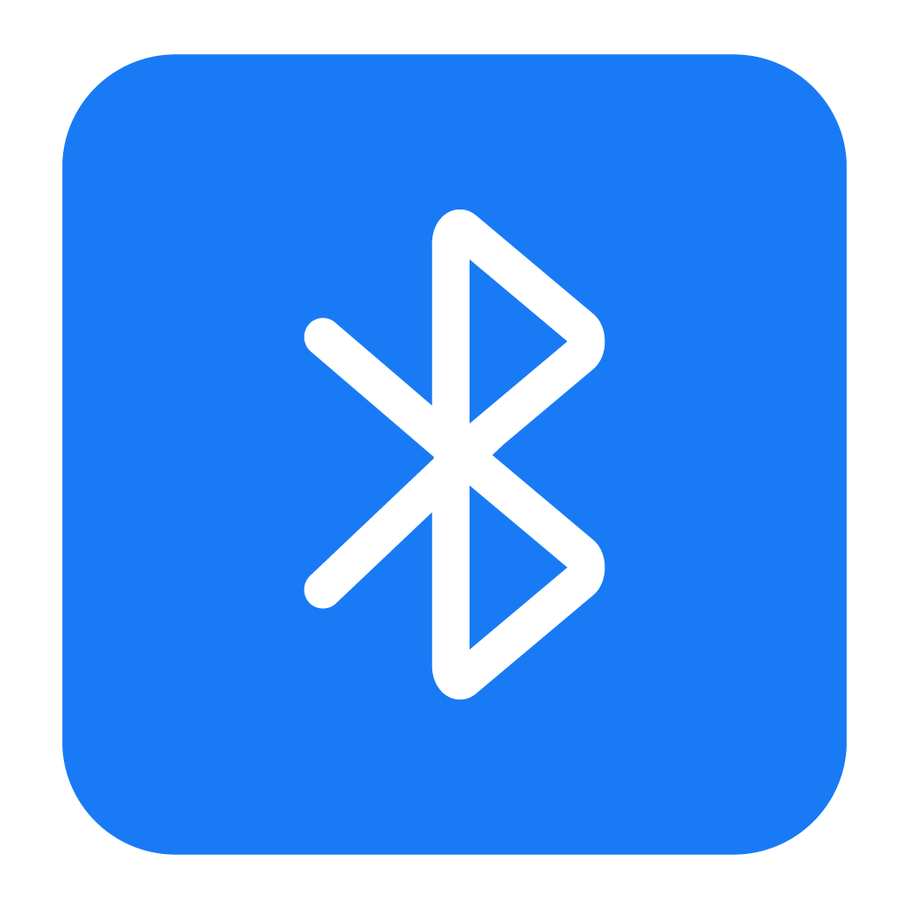
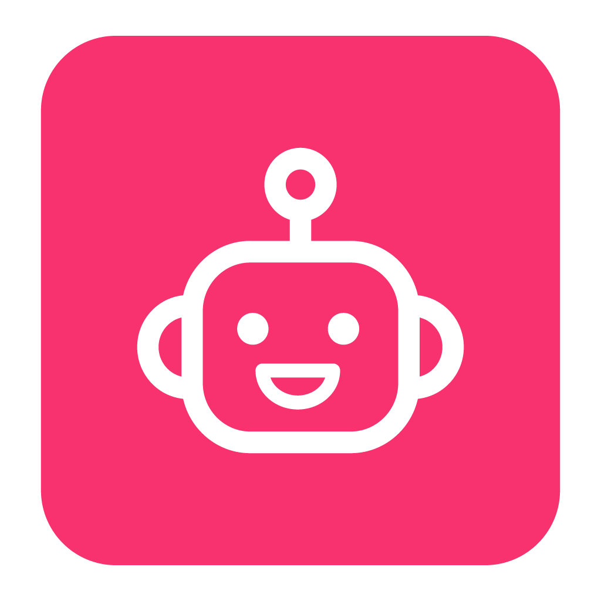
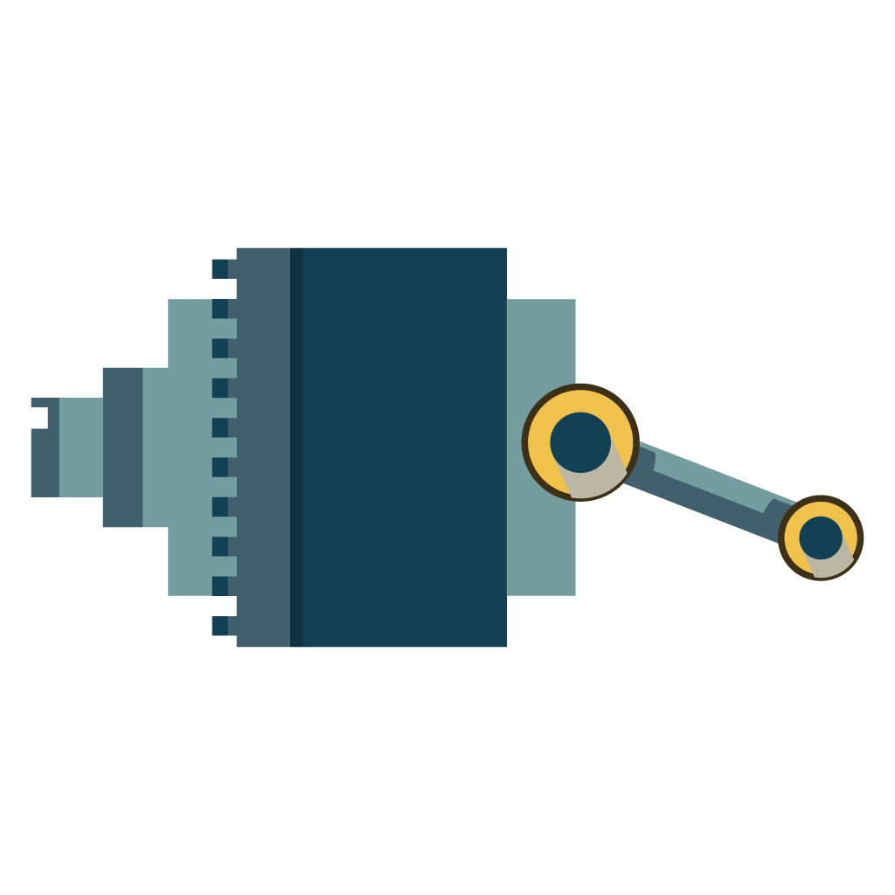
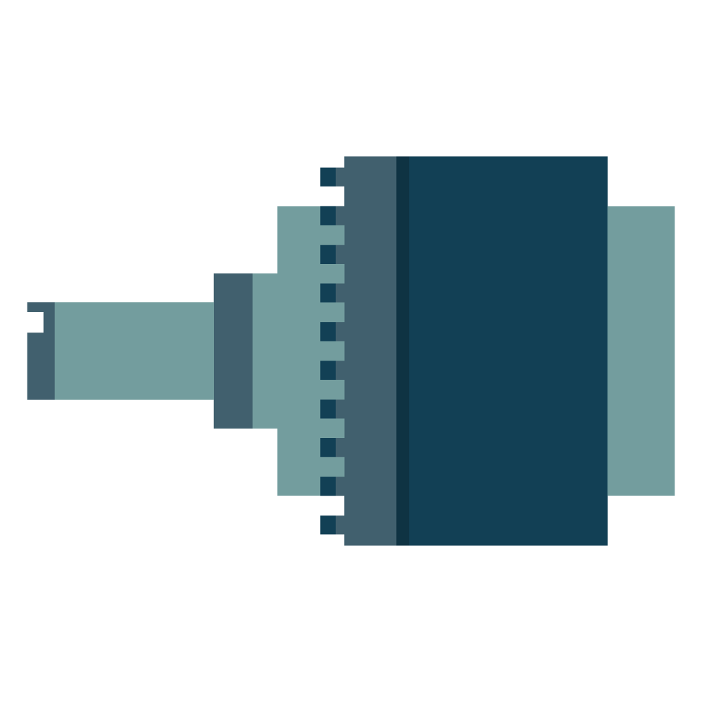
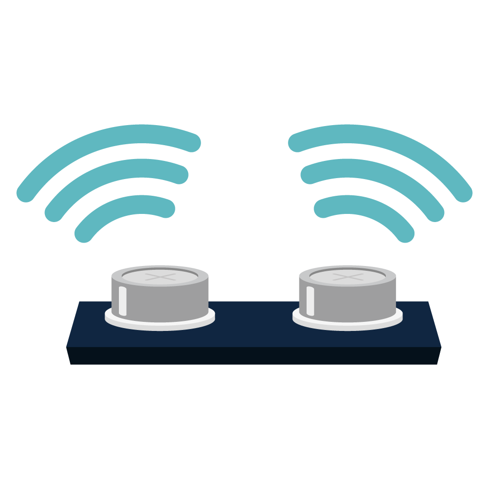
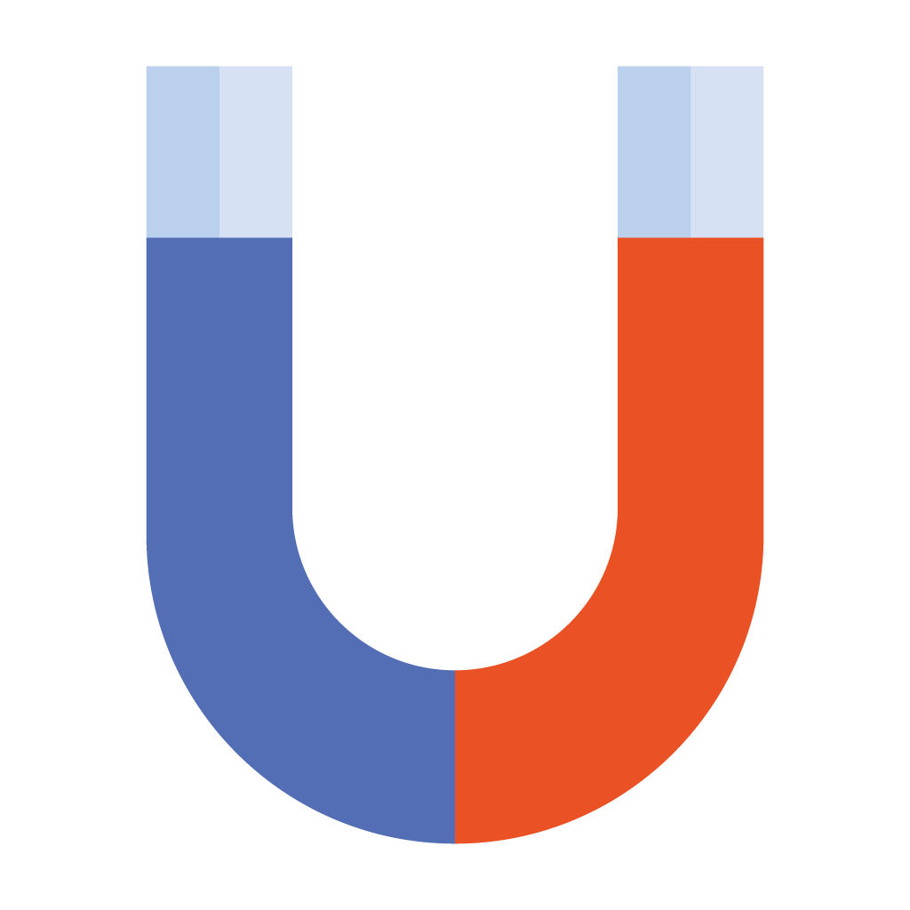
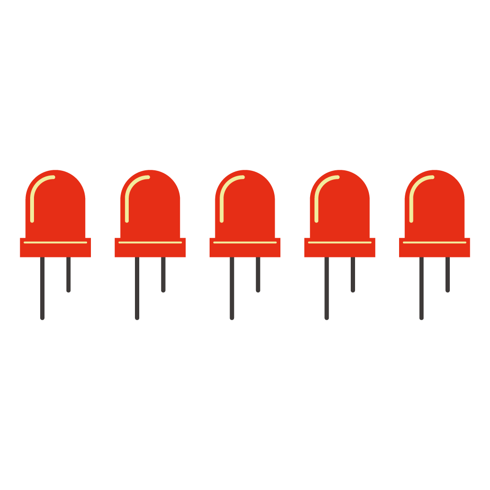
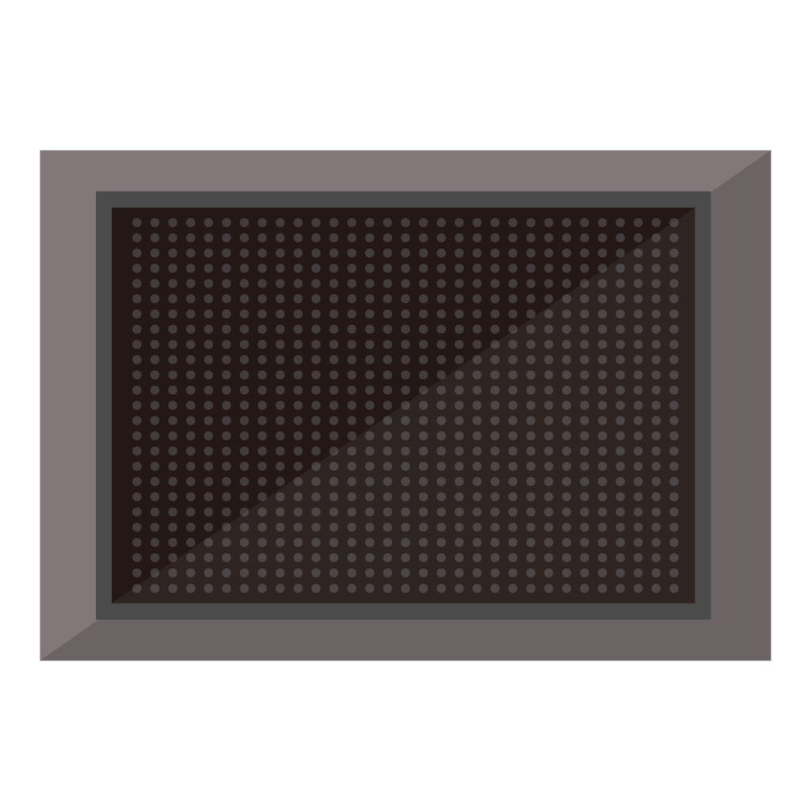

블록 코딩으로
떠나는 화성 탐사
블록을 연결해 화성 탐사 로봇을 움직여 보세요!
웹 브라우저에서 코딩하고 블루투스로 로봇에게 명령을 보낼 수 있어요.

언제 어디서든,
로봇을 코딩할 수 있어!

블록을 연결하며 코딩해요!
퍼즐처럼 블록을 이어 붙이면 코딩이 완성돼요. 코딩 경험이 없어도 괜찮아요.

선 없이 로봇과 연결해요!
웹 블루투스를 통해 로봇과 무선으로 연결해요. 앱 설치 없이 웹만 있으면 돼요.

AI가 코딩을 도와줘요!
AI 친구에게 물어보면 코딩 방법을 쉽게 알려줘요. 어려운 문제도 함께 해결해요.
어떻게 작동할까?
블록 코딩
블록을 연결해서 로봇이 움직이게 해요.
무선으로 연결
블루투스로 명령을 컴퓨터로 보내요.
초코보드 컴퓨터
컴퓨터가 명령을 이해하고 장비를 제어해요.
탐사 장비
로봇이 명령대로 움직이고 작동해요!
센서가 알려줘요
센서가 주변 정보를 모아서 초코보드로 보내요.
명령 확인
컴퓨터가 센서 정보를 확인하고 결과를 정리해요.
결과 보내기
정리된 결과를 블루투스를 통해 화면으로 보내요.
화면에서 확인
화면에서 로봇의 상태와 센서 정보를 확인해요.
함께 탐험할 친구들을 만나보자!

서보 모터 (바퀴)
360도 연속 회전, 서보 2개로 전진, 후진, 좌회전, 우회전을 할 수 있어요.

DC 모터
메인 구동 모터로 강한 힘을 가지고 있어요. 속도와 방향을 제어할 수 있어요.

초음파 센서 (HC-SR04)
앞 물체까지의 거리(cm)를 측정해요. 자동 정지 기능과 연동돼요.

자기장 센서
자석의 존재를 감지하여 탐사 미션에 활용할 수 있어요.

LED 배열 (5개)
5개의 LED를 개별 또는 전체 제어를 해요. 밝기 조절도 가능해요.

OLED 디스플레이
128 x 64 SSD1306 OLED에 메시지를 표시해요.